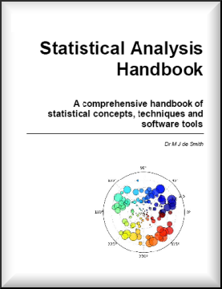

1 Introduction
1.1 How to use this Handbook
1.2 Intended audience and scope
1.3 Suggested reading
1.4 Notation and symbology
1.5 Historical context
1.6 An applications-led discipline
2 Statistical data
2.1 The Statistical Method
2.2 Misuse, Misinterpretation and Bias
2.3 Sampling and sample size
2.4 Data preparation and cleaning
2.5 Missing data and data errors
2.6 Statistical error
2.7 Statistics in Medical Research
2.7.1 Causation
2.7.2 Conduct and reporting of medical research
2.7.2.1 Randomized controlled trials
2.7.2.2 Case-control studies
2.7.2.3 Cohort studies
2.7.2.4 Meta analysis
3 Statistical concepts
3.1 Probability theory
3.1.1 Odds
3.1.2 Risks
3.1.3 Frequentist probability theory
3.1.4 Bayesian probability theory
3.1.5 Probability distributions
3.2 Statistical modeling
3.3 Computational statistics
3.4 Inference
3.5 Bias
3.6 Confounding
3.7 Hypothesis testing
3.8 Types of error
3.9 Statistical significance
3.10 Confidence intervals
3.11 Power and robustness
3.12 Degrees of freedom
3.13 Non-parametric analysis
4 Descriptive statistics
4.1 Counts and specific values
4.2 Measures of central tendency
4.3 Measures of spread
4.4 Measures of distribution shape
4.5 Statistical indices
4.6 Moments
5 Key functions and expressions
5.1 Key functions
5.2 Measures of Complexity and Model selection
5.3 Matrices
6 Data transformation and standardization
6.1 Box-Cox and Power transforms
6.2 Freeman-Tukey (square root and arcsine) transforms
6.3 Log and Exponential transforms
6.4 Logit transform
6.5 Normal transform (z-transform)
7 Data exploration
7.1 Graphics and vizualisation
7.2 Exploratory Data Analysis
8 Randomness and Randomization
8.1 Random numbers
8.2 Random permutations
8.3 Resampling
8.4 Runs test
8.5 Random walks
8.6 Markov processes
8.7 Monte Carlo methods
8.7.1 Monte Carlo Integration
8.7.2 Monte Carlo Markov Chains (MCMC)
9 Correlation and autocorrelation
9.1 Pearson (Product moment) correlation
9.2 Rank correlation
9.3 Canonical correlation
9.4 Autocorrelation
9.4.1 Temporal autocorrelation
9.4.2 Spatial autocorrelation
10 Probability distributions
10.1 Discrete Distributions
10.1.1 Binomial distribution
10.1.2 Hypergeometric distribution
10.1.3 Multinomial distribution
10.1.4 Negative Binomial or Pascal and Geometric distribution
10.1.5 Poisson distribution
10.1.6 Skellam distribution
10.1.7 Zipf or Zeta distribution
10.2 Continuous univariate distributions
10.2.1 Beta distribution
10.2.2 Chi-Square distribution
10.2.3 Cauchy distribution
10.2.4 Erlang distribution
10.2.5 Exponential distribution
10.2.6 F distribution
10.2.7 Gamma distribution
10.2.8 Gumbel and extreme value distributions
10.2.9 Normal distribution
10.2.10 Pareto distribution
10.2.11 Student's t-distribution (Fisher's distribution)
10.2.12 Uniform distribution
10.2.13 von Mises distribution
10.2.14 Weibull distribution
10.3 Multivariate distributions
10.4 Kernel Density Estimation
11 Estimation and estimators
11.1 Maximum Likelihood Estimation (MLE)
11.2 Bayesian estimation
12 Classical tests
12.1 Goodness of fit tests
12.1.1 Anderson-Darling
12.1.2 Chi-square test
12.1.3 Kolmogorov-Smirnov
12.1.4 Ryan-Joiner
12.1.5 Shapiro-Wilk
12.1.6 Jarque-Bera
12.1.7 Lilliefors
12.2 Z-tests
12.2.1 Test of a single mean, standard deviation known
12.2.2 Test of the difference between two means, standard deviations known
12.2.3 Tests for proportions, p
12.3 T-tests
12.3.1 Test of a single mean, standard deviation not known
12.3.2 Test of the difference between two means, standard deviation not known
12.3.3 Test of regression coefficients
12.4 Variance tests
12.4.1 Chi-square test of a single variance
12.4.2 F-tests of two variances
12.4.3 Tests of homogeneity
12.4.3.1 Bartlett's M test
12.4.3.2 Levene-Brown-Forsythe test
12.4.3.3 Fligner-Killeen test
12.5 Wilcoxon rank-sum/Mann-Whitney U test
12.6 Sign test
13 Contingency tables
13.1 Chi-square contingency table test
13.2 G contingency table test
13.3 Fisher's exact test
13.4 Measures of association
13.5 McNemar's test
14 Design of experiments
14.1 Completely randomized designs
14.2 Randomized block designs
14.2.1 Latin squares
14.2.2 Graeco-Latin squares
14.3 Factorial designs
14.3.1 Full Factorial designs
14.3.2 Fractional Factorial designs
14.3.3 Plackett-Burman designs
14.4 Regression designs and response surfaces
14.5 Mixture designs
15 Analysis of variance and covariance
15.1 ANOVA
15.1.1 Single factor or one-way ANOVA
15.1.2 Two factor or two-way and higher-way ANOVA
15.2 MANOVA
15.3 ANCOVA
15.4 Non-Parametric ANOVA
15.4.1 Kruskal-Wallis ANOVA
15.4.2 Friedman ANOVA test
15.4.3 Mood's Median
16 Regression and smoothing
16.1 Least squares
16.2 Ridge regression
16.3 Simple and multiple linear regression
16.4 Polynomial regression
16.5 Generalized Linear Models (GLIM)
16.6 Logistic regression for proportion data
16.7 Poisson regression for count data
16.8 Non-linear regression
16.9 Smoothing and Generalized Additive Models (GAM)
16.10 Geographically weighted regression (GWR)
16.11 Spatial series and spatial autoregression
16.11.1 SAR models
16.11.2 CAR models
16.11.3 Spatial filtering models
17 Time series analysis and temporal autoregression
17.1 Moving averages
17.2 Trend Analysis
17.3 ARMA and ARIMA (Box-Jenkins) models
17.4 Spectral analysis
18 Resources
18.1 Distribution tables
18.2 Bibliography
18.3 Statistical Software
18.4 Test Datasets and data archives
18.5 Websites
18.6 Tests Index
18.6.1 Tests and confidence intervals for mean values
18.6.2 Tests for proportions
18.6.3 Tests and confidence intervals for the spread of datasets
18.6.4 Tests of randomness
18.6.5 Tests of fit to a given distribution
18.6.6 Tests for cross-tabulated count data
18.7 R Code samples
18.7.1 Scatter Plot: Inequality
18.7.2 Latin Square ANOVA
18.7.3 Log Odds Ratio Plot
18.7.4 Normal distribution plot
18.7.5 Bootstrapping
19 Afterword: Big Data
